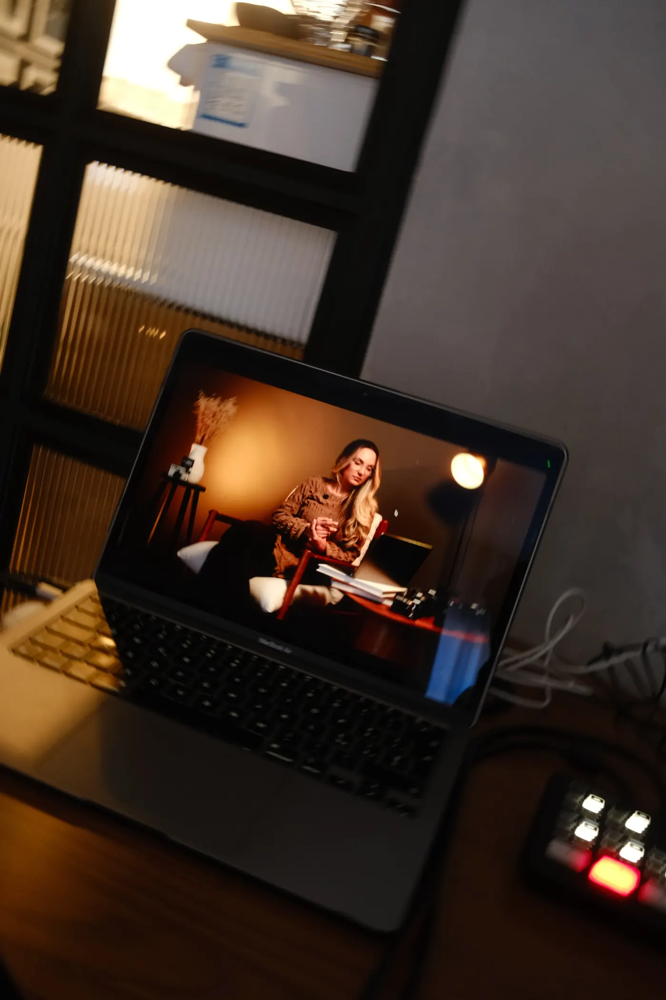
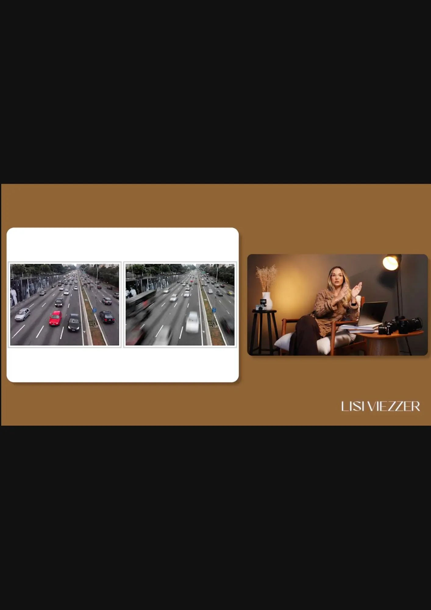
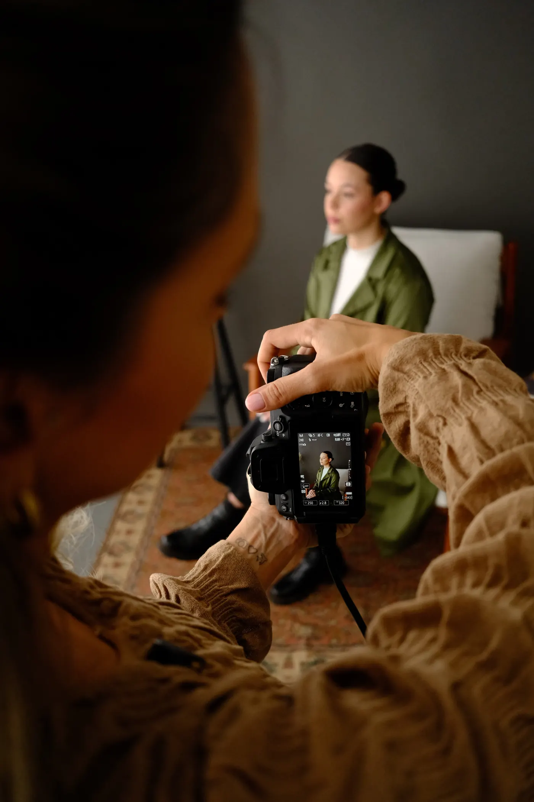
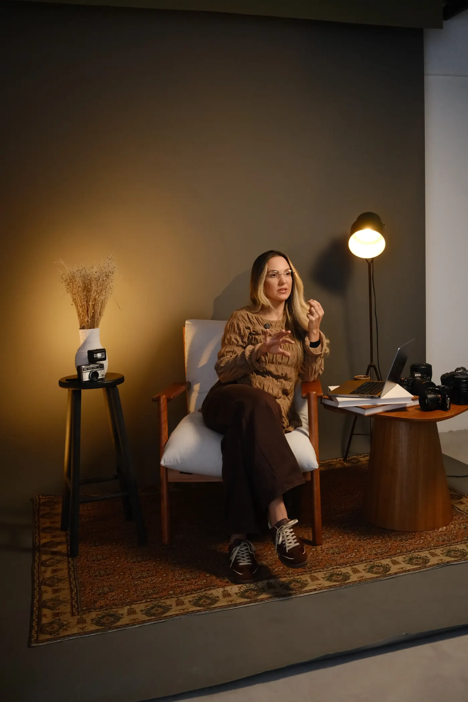
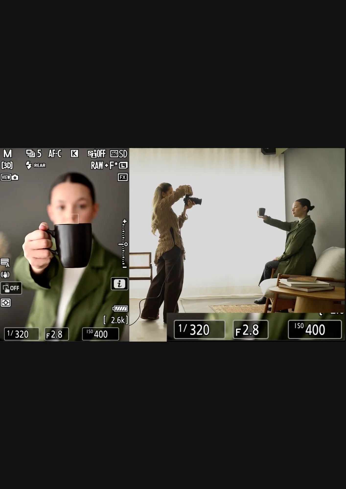
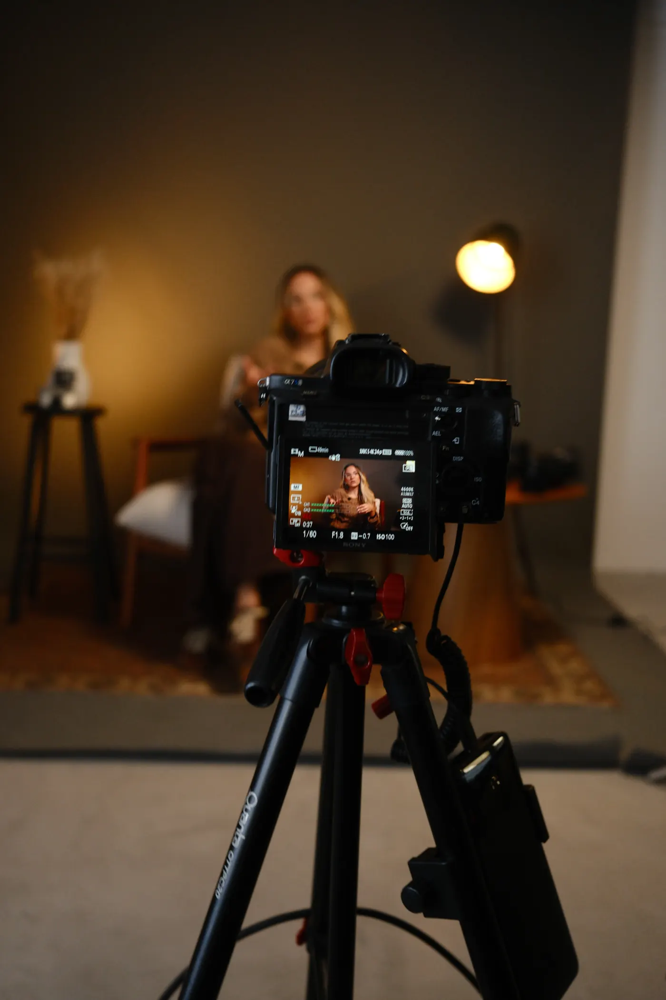
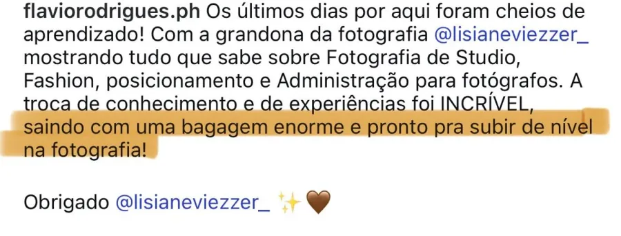

De forma simples, prática e sem complicação.
Quero aprender fotografiaImagine voltar de uma viagem e amar cada fotografia que trouxe com você.
Imagine registrar um momento importante da sua família e sentir que conseguiu capturar exatamente aquilo que estava vivendo.
Imagine olhar para as suas fotografias e enxergar nelas muito mais do que uma imagem. Enxergar uma história. Uma memória. Uma emoção.
Talvez você acredite que precisa de uma câmera melhor. Uma lente melhor. Ou até mais talento. Mas a verdade é que você não precisa de mais equipamento. O problema é que ninguém te explicou fotografia de forma simples.
Conheça o curso Fotografia do Zero, criado para quem deseja aprender fotografia do zero de forma simples, prática e sem complicação.
Aprenda para que serve cada configuração e como utilizá-las da melhor forma.
Entenda a relação entre ISO, velocidade e abertura sem complicação.
Aprenda a enxergar luz, composição e enquadramento de forma mais consciente.
Domine os primeiros passos de uma edição profissional no Lightroom.
Vamos aprender a fotografar de verdade?
Quero Começar AgoraVocê investe em equipamento, mas sente que ainda não está tirando o máximo da sua câmera.
Está na hora de assumir o controle e criar fotos com intenção, não deixar a câmera decidir por você.
Deseja criar recordações com qualidade e beleza. Fotos que você vai querer mostrar e guardar para sempre.
Quer evoluir seu olhar fotográfico e transformar conhecimento técnico em resultado visual.
Mesmo sem nenhuma base, a linguagem do curso é simples e acessível para que você evolua com confiança.
Quer entender se a fotografia pode se tornar mais do que um hobby e como dar os primeiros passos profissionais.
Conteúdo progressivo, do básico ao manual, de forma simples, prática e sem complicação.
Pronto para começar a fotografar do jeito certo?
Quero começar agora





Quando comecei a fotografar, minha maior dificuldade era entender a lógica entre ISO, velocidade e abertura.
Não conseguia fazer as fotos ficarem com a cor que eu imaginava. Ou ela ficava escura, ou estourava.
Tudo parecia complicado demais. Mas eu não precisava de mais informações. Precisava de alguém que explicasse de forma simples.
Foi assim que comecei. Aprendendo os fundamentos. Praticando. Errando. Acertando. E evoluindo fotografia após fotografia.
Mas você não precisa demorar como eu demorei. Hoje, depois de mais de 12 anos trabalhando com fotografia, acredito em uma coisa:
"Você não precisa saber tudo para começar. Você só precisa entender o suficiente para praticar com confiança."

Compra 100% Segura
Vamos aprender a fotografar de verdade?
Quero começar agora